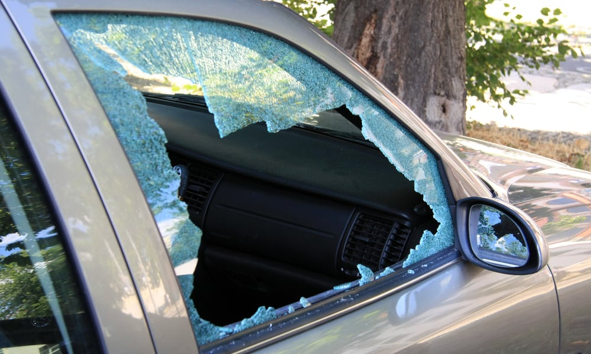

<mat-card>
    <mat-card-header>
        <mat-card-title> title </mat-card-title>
        <mat-card-subtitle>reported by user at this time </mat-card-subtitle>
    </mat-card-header>
    
    <mat-card-content>
        text
    </mat-card-content>
    <mat-card-actions>
        <mat-icon class="action-item" color="warn">save</mat-icon>
    </mat-card-actions>
</mat-card>